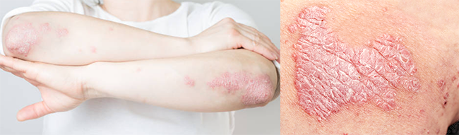

乾癬性関節炎
乾癬性関節炎とは
乾癬性関節炎は、皮膚の病気「乾癬」に伴って起こる関節の炎症です。
皮膚に赤い発疹やフケのようなかさぶたができる乾癬と、手足・指・背中などの関節に痛みや腫れが起こる関節炎が合わさった病気です。
乾癬の多くは尋常性乾癬と呼ばれるタイプで、実際に乾癬全体の90%程度がこのタイプに分類されますが、それ以外に関節の痛みを伴う「関節症性乾癬」、1つ1つの皮疹が小さく扁桃炎の後などに生じやすい「滴状乾癬」、全身に膿疱が多発し発熱などの全身症状を伴う「汎発性膿疱性乾癬」があります。
関節が腫れたり、痛んだり、動かしにくくなる症状があり、放っておくと関節の変形や機能障害が進行することもあります。
早期発見と適切な治療で、痛みや関節の変形を防ぐことができます。

症状
関節の痛みや腫れ（特に指や足の指、膝など）
朝に手がこわばる
指や足の指全体が腫れて「ソーセージ指」のようになる
かかとや足裏の痛み
皮膚に乾癬の症状（赤い発疹、銀白色のフケ）
手指や足の関節、アキレス腱付着部・足底、爪など
原因
乾癬性関節炎は、免疫の異常が原因と考えられています。
家族に乾癬がある方や、30〜50代で皮膚の乾癬を持っている方に多く見られます。
ストレスや感染症が引き金になることもあります。
乾癬の皮膚症状が出てから関節症状が現れることが多いですが、逆に関節炎が先に起こる場合もあります。
治療について
乾癬性関節炎の治療では、痛みや腫れを抑えるために鎮痛薬を使用したり、症状が続く場合には抗リウマチ薬や免疫の異常を調整する薬で関節や皮膚の炎症を抑えていきます。
また、関節の動きを保つためにリハビリや運動療法も行い、皮膚科と連携しながら全身の状態を総合的に管理していきます。
治療の選択は症状の重さや患者様の生活スタイルに応じて個別に決めていきます。
日常生活での注意点
ストレスを避け、十分な睡眠をとる
肥満や喫煙は症状悪化のリスクがあるため改善をする
定期的な通院で症状を早期に発見・対処する
よくあるご質問
完治は難しいですが、適切な治療により症状を抑え、関節の変形を防ぐことが可能です。 関節リウマチは左右対称に起こることが多いですが、乾癬性関節炎は左右非対称なことが特徴です。爪や皮膚の乾癬の有無も重要な判断材料になります。 はい。関節症状が先に出るタイプもあります。ご家族に乾癬の方がいる場合などは要注意です。乾癬性関節炎は治りますか？
リウマチとの違いは？
皮膚に乾癬がないけど関節炎があります。可能性はありますか？